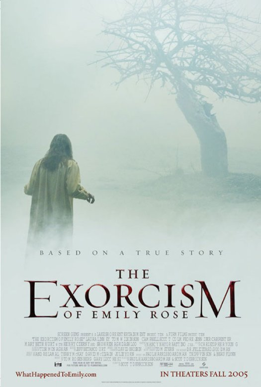
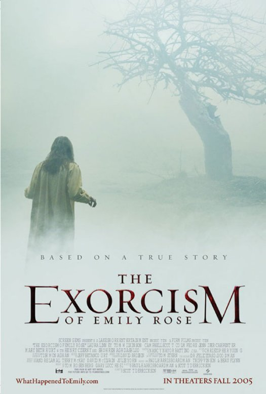
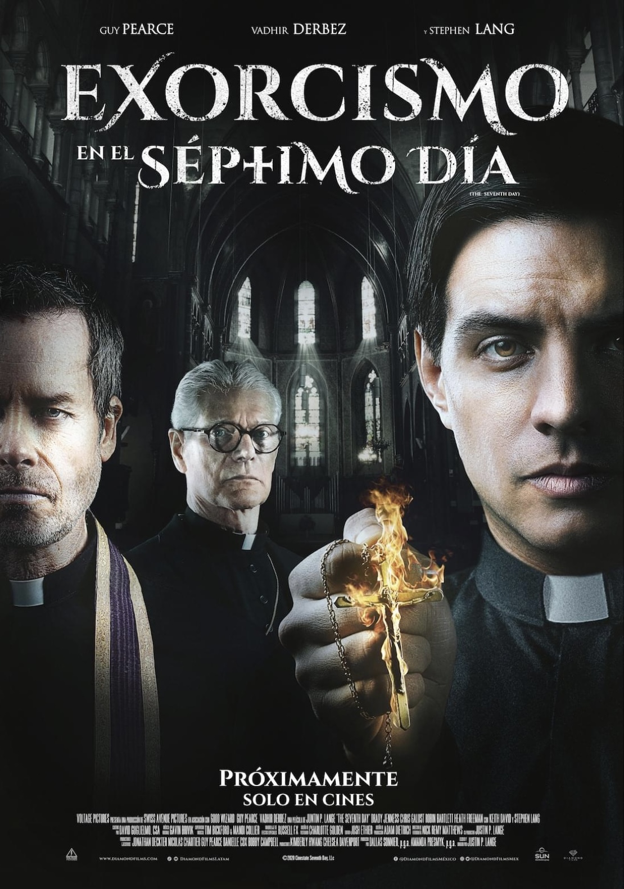
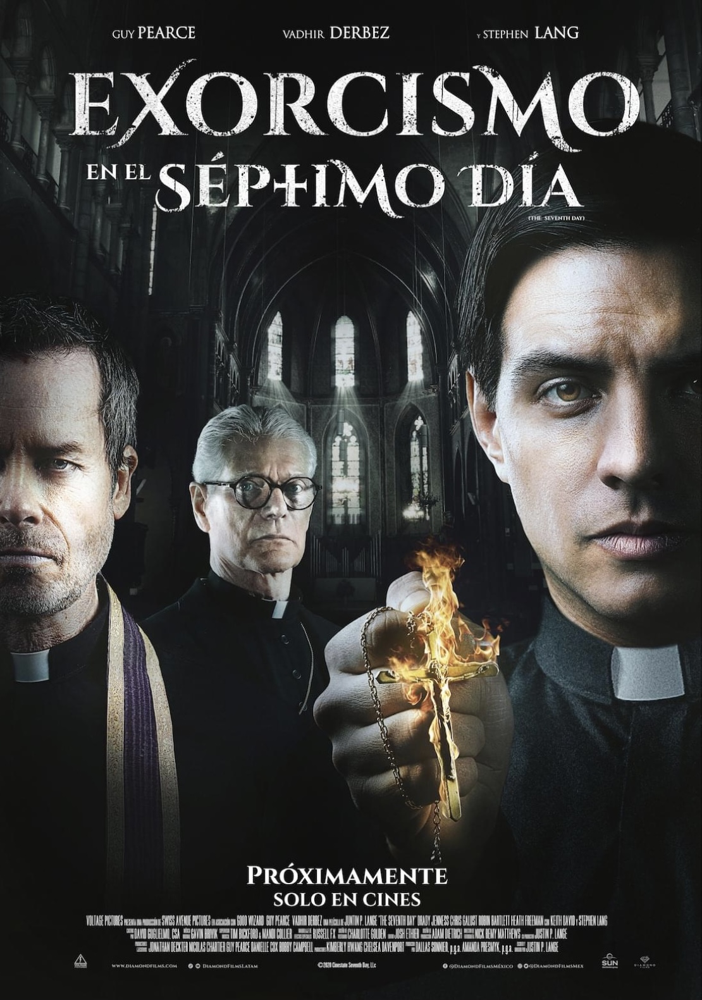
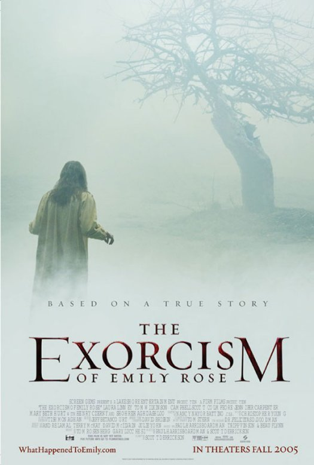
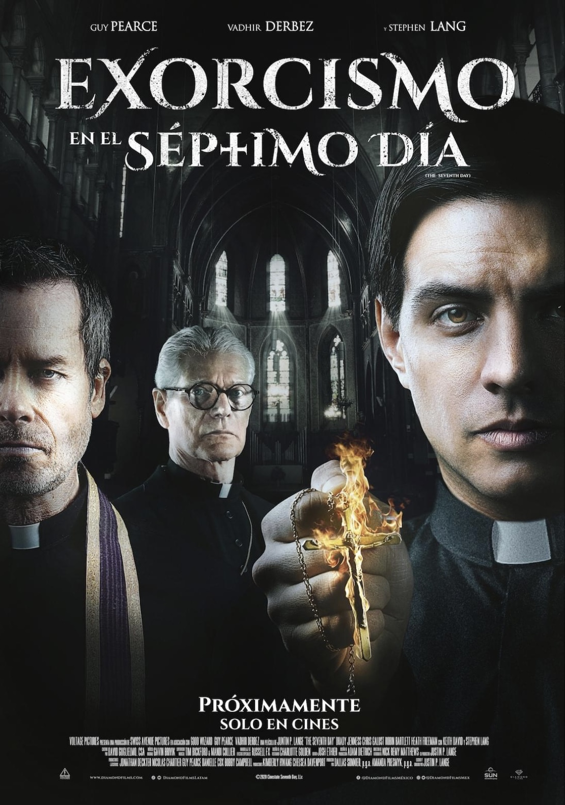

 

El género de terror de exorcismos ha cautivado a los espectadores durante décadas, y ha dado lugar a algunas de las películas más aterradoras de la historia del cine. Si eres un fanático de las películas de terror, aquí te presentamos las 5 mejores películas de terror de exorcismos que debes ver.


La primera película de terror con una escena de exorcismo fue «La posesión de Alma» (1948), dirigida por el director estadounidense Alfred Hitchcock. Aunque no se trata de una película exclusivamente de exorcismos, contiene una escena en la que una mujer se somete a un exorcismo en un intento de liberarla de un espíritu maligno. La película está basada en una obra de teatro británica llamada «The Sacred Flame» de W. Somerset Maugham. La escena del exorcismo se ha convertido en una de las más icónicas y aterradoras de la película. Desde entonces, el tema del exorcismo ha sido abordado en numerosas películas de terror, convirtiéndose en un subgénero popular del cine de terror.

| trailer | Pequena descripcion |
|---|---|
|
Inspirada en los archivos reales del Padre Gabriele Amorth, Exorcista jefe del Vaticano (interpretado por el ganador del Premio Oscar de la Academia® Russell Crowe), El Exorcista del Papa cuenta cómo Amorth investiga la terrorífica posesión de un joven niño y cómo termina descubriendo una conspiración secular que el Vaticano ha tratado de mantener oculta desesperadamente. |
|
|
Hubo un juicio a el Padre, Richard Moore ya que Emily estaba a su caro y lo culpaban por influirle en que ella de de tomar su medicación, ya que según los médicos ella sufría esquizofrenia y epilepsia. La película se trata de que los hechos paranormales que sufría Emily, le empezaron a ocurrir a la abogada del Padre Richard Moore. La abogada comienza a investigar. La película también relata y muestra los recuerdos de a las personas que entrevista. |
|
|
Un reconocido exorcista se reúne con un sacerdote novicio en su primer día de entrenamiento. A medida que descubren el infierno que existe sobre la Tierra, las líneas entre el bien y el mal se distorsionan dando lugar a que emerjan sus propios demonios. |
|
|
Basado en hechos reales, el film toma como base una novela de Matt Baglio. Un estudiante norteamericano que se prepara para el sacerdocio, está en una etapa de pérdida de fé, para recuperarla acudirá a la escuela de exorcismos de El Vaticano en la que se verá cara a cara con las fuerzas demoníacas. |
|
|
EL EXORCISTA la película más aterradora de todos los tiempos, sigue atormentando a nuevas generaciones, su maestría en dirección, los efectos en vídeo y audio hacen a esta película, más que un clásico del género de terror. |